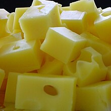

Ser to jest nazwa produktu spożywnego stworzonego z mleka, ale dzisiaj powiem ci czemu jest najlepszym jedzeniem na świecie!!!!!!
Ser to jest bardzo smaczne jedzenie, dlatego jest najlepsze! Ser też dobrze smakuje z innymi rzeczami do jedzienia.
| śmietankowe: 50% |
| pełnotłuste: 45% |
| tłuste: 40% |
| półtłuste: 20% |
| odtłuszczone: 10-20% |
| chude: mniej niż 10% |